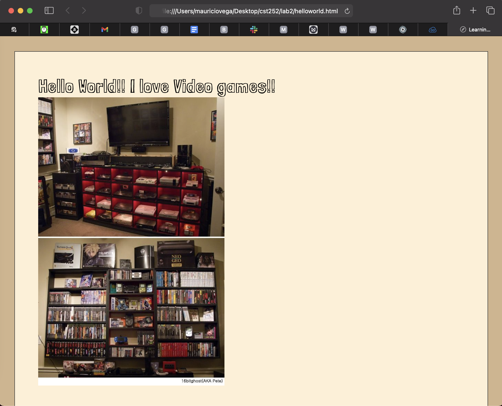

For this lab we are using our debugging knowledge to fix old assignments.
Challenges
The challenge I had when completing this assignment was going through each lab to look for errors.
Results
I added a screenshot of Lab 2 before I fixed it

Other than fixing some styling issues or applying my css to older pages I had some minor issues when going back to labs. I had submitted all labs to this point and the one I was stuck on before I have already gone back and fixed. Which ended up me having a spelling error. I did test the way the debugger works and found that quite useful. I do practice the "Rubber Ducking" method when I get stuck or I am working with my partner.